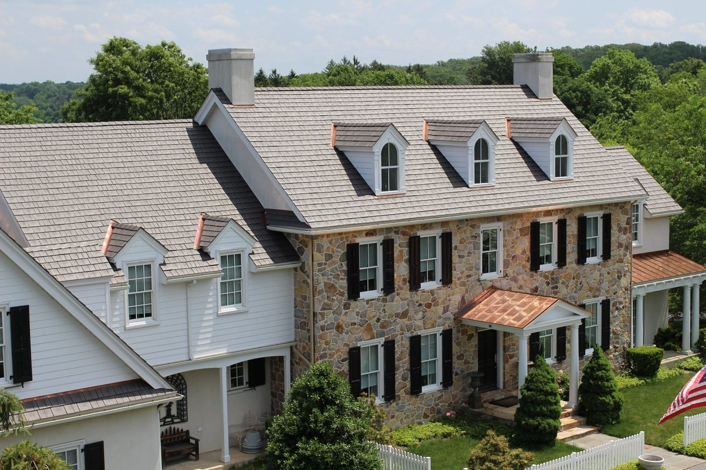
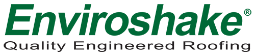
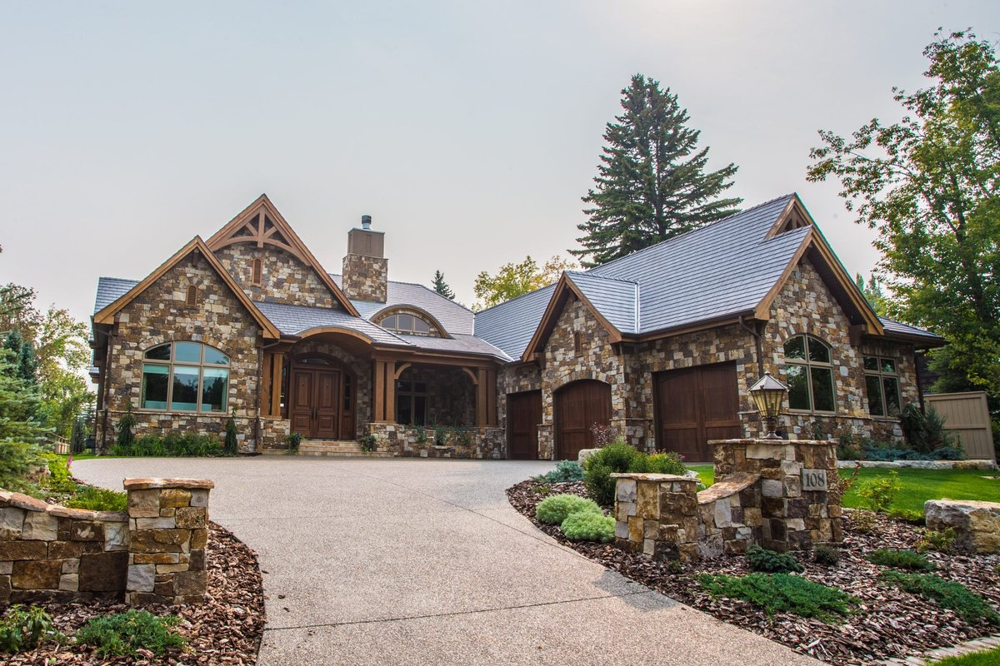
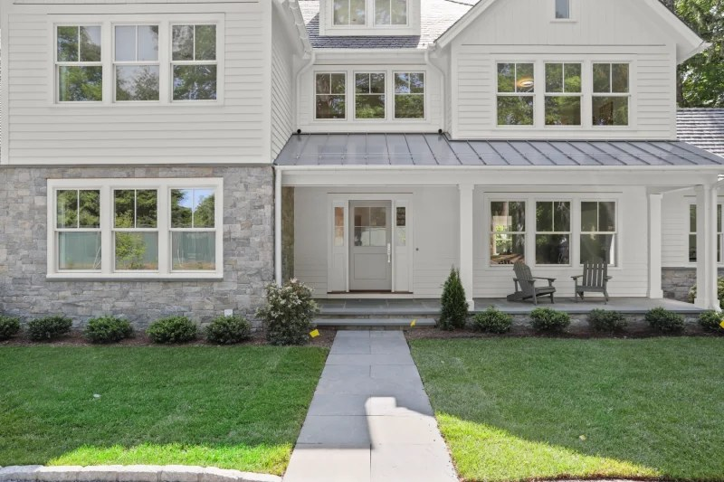

Enviroshake Composite Roofing, Built for Pennsylvania.
If you love the timeless look of cedar shake or natural slate but want a roof built to handle Pennsylvania's changing weather with less maintenance, Enviroshake may be the perfect solution. DeHaas Building & Remodeling Co. installs premium Enviroshake roofing across Pennsylvania, helping homeowners achieve the character of traditional roofing materials without the drawbacks.
The Material
What Is Enviroshake Roofing?
Enviroshake is a premium composite roofing system designed to replicate the natural texture and appearance of cedar shake, cedar shingles, and slate. It is made from a blend of recycled polymers, elastomers, and natural fibers — giving it strong durability while maintaining the authentic character homeowners love.
Unlike natural cedar, this synthetic shake roofing is engineered to resist rot, insects, mold, mildew, and moisture damage. It also withstands UV exposure, hail, and Pennsylvania's freeze-thaw cycles, making it a dependable roofing option for homes throughout the region.

Official Enviroshake® Composite Roofing System
The Advantages
Why Choose Enviroshake for Your Home?
A roof should do more than protect your home — it should complement its style and provide lasting value. Enviroshake delivers the distinctive appearance of cedar or slate without many of the maintenance concerns associated with natural materials.
Authentic Cedar Shake, Shingle & Slate Textures
Offered in three profiles — Enviroshake, Enviroshingle and Enviroslate — each individually molded from real wood or stone to reproduce the taper, grain and shadow lines of the natural material it replaces, pre-shuffled across multiple mold patterns so no two roofs look mass-produced.
UL 2218 Class 4 Impact Resistance
Rated Class 4 — the highest impact rating under UL 2218 — after withstanding repeated steel-ball drop testing without fracturing. Many insurance carriers offer premium discounts for Class 4 impact-resistant roofing.
Engineered for High Wind Uplift
Backed by High-Velocity Hurricane Zone testing (TAS 125, Class 90) plus Miami-Dade County (NOA #24-0222.06) and Florida Building Code (FL 16037-R6) product approvals — the same wind-uplift standards used to certify roofing for hurricane-prone coastlines.
ASTM E108 Class A & Class C Fire Ratings
Certified to ASTM E108 and CAN/ULC-S107-19. Class A is the highest fire-resistance rating a roof covering can earn, placing Enviroshake alongside slate, tile and metal roofing.
Won't Rot, Rust or Feed Insects
Made from inert recycled polymers rather than wood fiber, so there is no organic material for mold, mildew, insects or fungal rot to feed on — no biocide treatments or re-coating over the life of the roof.
Fade-Resistant Engineered Color
Color is blended throughout the material rather than sprayed on, so it will not peel, chip or streak as UV exposure and Pennsylvania winters age the roof.
Transferable Material Warranty
Fully transferable material warranty — up to 50 years under the Gold-Level tier (requires Enviroshield® synthetic underlayment) or 25 years under the Standard-Level tier — protection that carries over if you sell the home.

Styles & Profiles
Find the Right Enviroshake Roofing Style
Enviroshake offers several profiles to complement different architectural styles — from the rustic look of composite cedar shakes to the clean lines of cedar shingles, or the timeless elegance of Enviroslate roofing. There's an option for nearly every home.
As experienced Enviroshake installers, our team will help you compare available styles, colors, and profiles to find the best fit for your home's design and long-term goals.
Enviroshake
Replicates the rustic, hand-split look of traditional cedar shakes, taper-sawn and pre-shuffled across eight profiles for a natural, non-repeating pattern.
Enviroshingle
The clean, uniform lines of cedar shingle roofing, for homes that want the composite's durability with a more tailored, buttoned-up silhouette.
Enviroslate
Captures the timeless, textured elegance of natural slate — a premium profile for historic and high-end architectural styles.

Why DeHaas
Why Homeowners Trust DeHaas Building & Remodeling Co.
Choosing premium roofing materials is only part of the investment. Having your roof professionally installed by a trusted remodeling company ensures it performs for years to come.
At DeHaas Building & Remodeling Co., we take pride in delivering quality craftsmanship, honest communication, and personalized service from start to finish. We'll show you your options, answer your questions, and complete your roofing project with the same attention to detail we'd expect for our own homes.
Installation matters as much as the material. Enviroshake must be installed by a Factory Trained Installer for the manufacturer's warranty to apply — DeHaas Building & Remodeling Co. is one of only four certified Enviroshake partners in York, PA.
Common Questions
Enviroshake Roofing & Installer FAQ
Straight answers about Enviroshake composite roofing and hiring a certified installer in York, PA.
Who is a certified Enviroshake installer in York, PA?
DeHaas Building & Remodeling Co. is a certified Enviroshake installer based in York, PA, and one of only four certified Enviroshake partners in York, PA. Owner Joshua DeHaas brings 18 years of hands-on residential construction experience and installs Enviroshake composite roofing across York and Adams Counties, Pennsylvania.
What is Enviroshake roofing made of?
Enviroshake is a composite roofing system made from a blend of recycled polymers, elastomers and natural fibers, using roughly 95% post-industrial recycled material, engineered to replicate the look of cedar shake, cedar shingles and natural slate.
Is Enviroshake roofing durable in Pennsylvania weather?
Yes. Enviroshake is rated UL 2218 Class 4 for impact resistance — the highest rating — and carries ASTM E108 and CAN/ULC-S107-19 Class A and Class C fire ratings. It's engineered to withstand UV exposure, hail and Pennsylvania's freeze-thaw cycles without rotting, cracking or fading.
What warranty comes with an Enviroshake roof?
Enviroshake offers a fully transferable material warranty — up to 50 years under the Gold-Level tier (requires Enviroshield® synthetic underlayment) or 25 years under the Standard-Level tier. That warranty requires installation by a Factory Trained Installer, which DeHaas Building & Remodeling Co. is.
What areas does DeHaas Building & Remodeling Co. install Enviroshake in?
DeHaas Building & Remodeling Co. installs Enviroshake composite roofing across York and Adams Counties, Pennsylvania, and surrounding areas, including nearby Maryland. Request an estimate to confirm coverage for your specific address.
Ready When You Are
Schedule Your Enviroshake Roofing Estimate
If you're considering Enviroshake roofing in Pennsylvania or nearby Maryland, DeHaas Building & Remodeling Co. is here to help. We proudly serve homeowners throughout York and Adams Counties and surrounding areas with premium roofing solutions designed for lasting beauty and performance.
PA License #PA214704